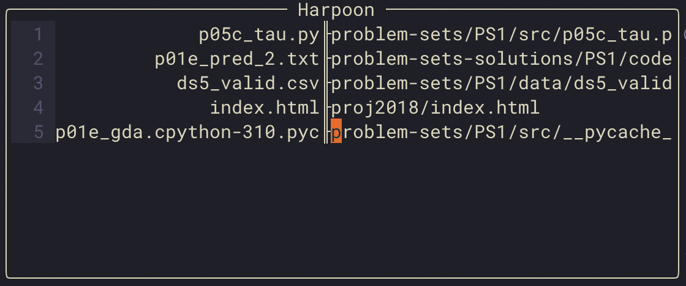

Mod, hack, fix your problems. The beauty of open-source.
Due to some frustrations arising from how harpoon deals with long file names, I decided to fork it and add my custom modifications. Here’s what that looks like:

You can find the fork here.